Features built around your teaching
Cadance 7.5 brings your music, your class notes, and your teaching tools together. Find the right track in seconds, change its tempo, and stay in control from anywhere in the studio.
Free to download. Notebook is included in Class Planning Mode, and new users receive 14 free Day Passes and 1 free Perfect Practice Pass.
Search
One search for all your music
Tap the magnifier at the top of the screen to search everything in Cadance at once. Your own music comes first, with Apple Music results below.
Your media first
Search your device library, imported files, Syllabus, and playlists together. Each result is labelled Files, Syllabus, or My Cadance so you can see where it lives.
Search the way you teach
Start from a grid of dance terms for barre, centre, allegro, pointe work, musical feel, and style. Combine terms to narrow the results, and add your own terms to the grid.
Apple Music when you need it
Apple Music results appear below your own music. Switch to Your Media to hide them, or turn them off in Settings. Without an internet connection, Search shows your media only.
Collect as you go
Every result has a Track Actions menu with Add to Playlist, Favorite, and More Like This, so you can build a class straight from the results.
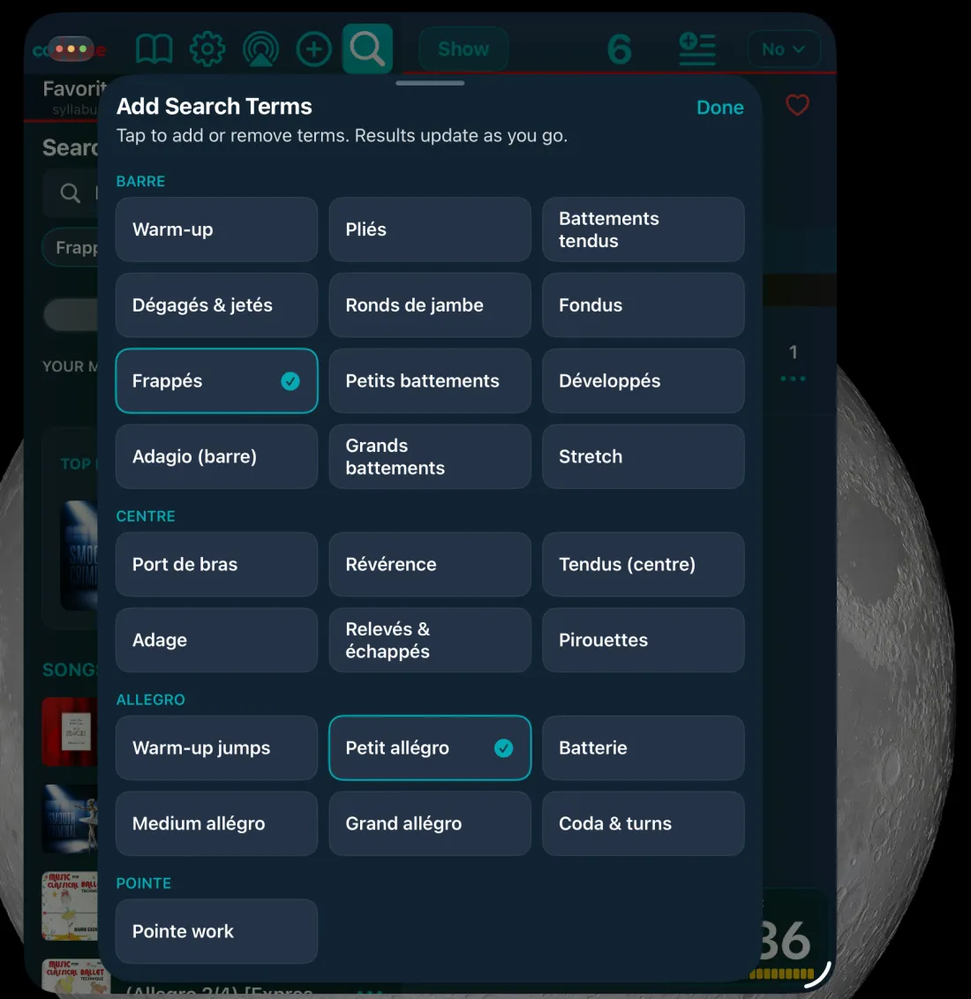
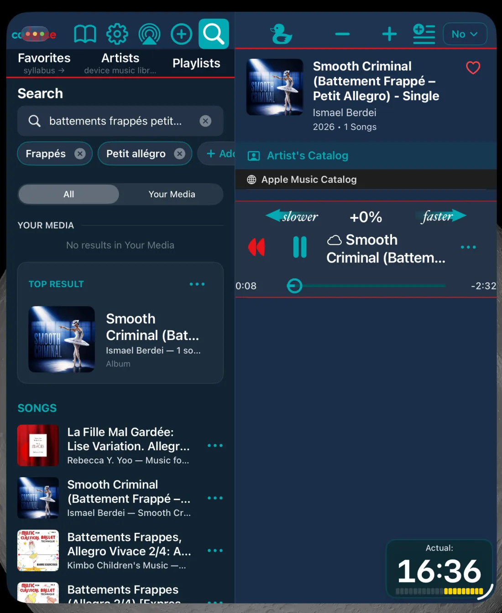
Notebook
Plan in the way you teach
Notebook is free in Class Planning Mode. Type a plan, handwrite a quick note, share it, and keep the music for that moment only a tap away.
Typed and handwritten notes
Use the format that matches your process, from a detailed lesson plan to a quick formation sketch with Apple Pencil or your finger.
Music links in context
Add Cadance track links to a note. Anyone reading the shared note can open the link and sample the connected music.
Synced across iPhone and iPad
Notes sync through your iCloud account, with folders, version history, and a Recently Deleted list that keeps notes for 30 days.
Notes beside the music
Dock a note beside your music while you teach. Teaching with a docked note needs Artist, an active Day Pass, or an active Perfect Practice Pass.


Access for the work in front of you
Day Pass
Full Artist-level Cadance for one calendar day. A pass activates when a track plays past 15 seconds. Day Passes never expire, and new users begin with 14 free passes.
Perfect Practice Pass
Choose one song and keep it ready for 30 days of choreography, rehearsal, practice, or filming, with two free swaps. New users receive 1 free pass.
Focus Player
Repeats up to 8 or infinite, a start delay, 2, 5, or 12-second gaps between repeats, and two markers for looping a section. Available with Artist, an active Day Pass, or on a Perfect Practice Pass track.
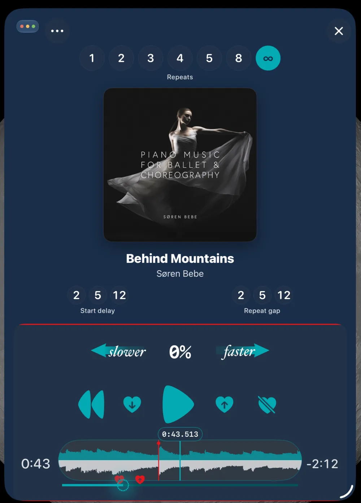
Artist feature
Bring the full syllabus into the room
Your syllabus, as it was published
Import syllabus folders and zips from societies and vendors and play the tracks in place, without reorganising the library. Two simple screens keep every exercise in context.
Richer class material
Text, Markdown, PDFs, images, and video open in a viewer beside the music, so reference material lives with your teaching workflow.
Clear access boundaries
Browsing and reading Syllabus documents is open to everyone. Playing Syllabus tracks needs Artist, a Day Pass, or a Perfect Practice Pass for the track.

Your class, your tempo
Perfect technique work
Slow down the tempo to build technique — ideal for ballet class music, tap classes, and detailed choreography work.
Challenge and upskill
Speed up the tempo to challenge your students and help them master complex, fast-paced routines.
Natural sound
Change tempo from -50% to +100% without changing the pitch. Your own music changes tempo seamlessly; Apple Music tracks pause briefly at each change, an Apple limitation.
Tools for effortless teaching
Countdown to start
Hold the play button to set a countdown of up to 12 seconds, so you and your dancers can get in position and start together. (Spark+)
Master repetitive drills
Set the usual repeat count up to 4 for class drills, or choose No Autostart to set the tempo before the track plays. Focus Player also offers 5, 8, and infinite repeats.
Start from the top
Auto Rewind makes track auditions easy: when the rewind button is red (for the first 15 seconds) the track will rewind when you pause — so you’re ready for the “real” use for the students.
Clock and class timer
Every detail view shows the time or a class timer counting down from 90, 75, 60, 45, 30, or 15 minutes, plus your battery level.
Duck
Hold Duck to drop the volume while the music keeps playing, so you can instruct without shouting or check whether dancers stay on the beat.
Teaching Lock and Tilt Lock
On iPhone, lock the screen during playback so stray touches can’t interrupt class. Duck and tempo stay available, and Tilt Lock locks and unlocks by itself as you move.
Control class from anywhere in the studio
Apple Watch
Run class from your wrist while your iPhone stays by the speaker: play and pause, choose a track, change tempo with the Digital Crown or the + and − buttons, set the volume, duck, and rewind. Watch control covers everything your plan plays: Spark, Artist, or an active Day Pass.
Bluetooth remote
Use a Bluetooth media remote with iPhone or iPad: play, pause, next, previous, volume, and hold for 1% tempo steps on your own, Syllabus, and Local Storage tracks. On iPad, a large Remote Assist card shows the track and tempo across the room.
AirPlay and speakers
The AirPlay button on the top bar shows where your music is playing and switches between your speaker, AirPlay, and Bluetooth outputs.
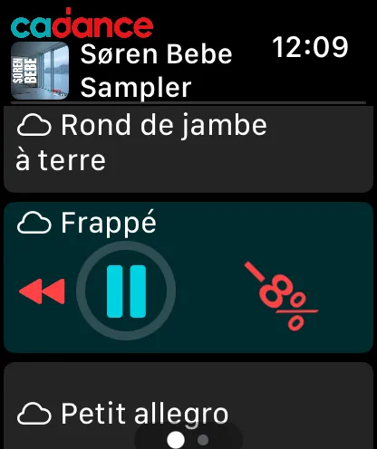
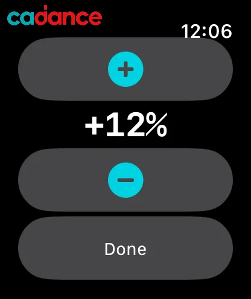
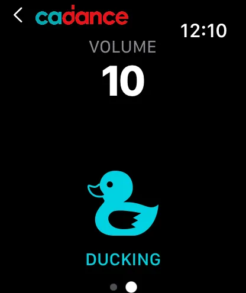
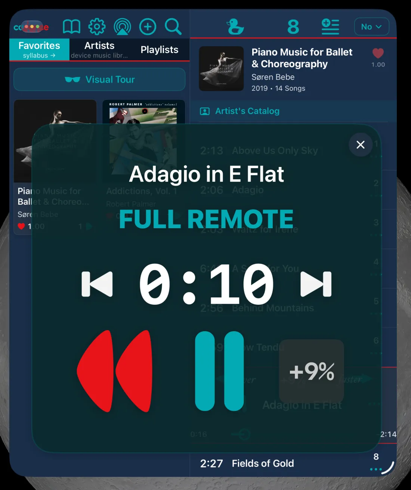
Your music, perfectly organized
All your music in one place
Work with music from your device library, imported files, Apple Music, and Syllabus material. Which tracks play in full depends on your plan or pass.
Dependable imports
Import folders and files from iCloud Drive or the Files app, or send them with AirDrop. Cadance checks the size and free space first, shows progress, and lets you pause, resume, or end an import. Files already in Cadance are skipped.
Organize classes effortlessly
Create My Cadance playlists in folders up to four levels deep. Every track remembers the last tempo you used.
Cadance Resources
70 curated playlists in 10 folders, from Artist Samplers and Extraordinary Groups to Hip-Hop, Latin, and social dance. Copy any of them into My Cadance to make it your own.
Favorites that stay fresh
The Favorites tab keeps key albums and playlists front and center — and lets them gently decay over time so what you use most recently naturally rises to the top.
Reliable offline use
Your own music and Syllabus tracks play without an internet connection. Because studio Wi-Fi shouldn’t get in the way of a great class.
Cadance is not bundled with music and doesn’t sell music — bring your own.
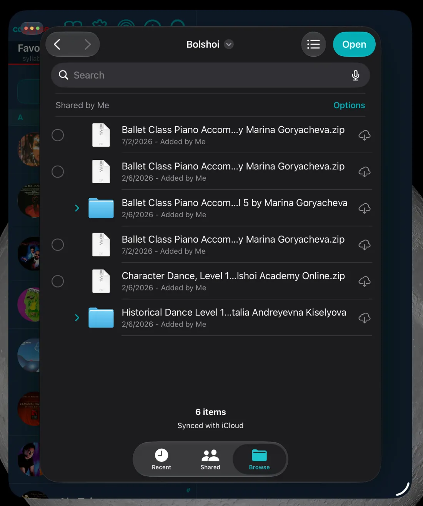
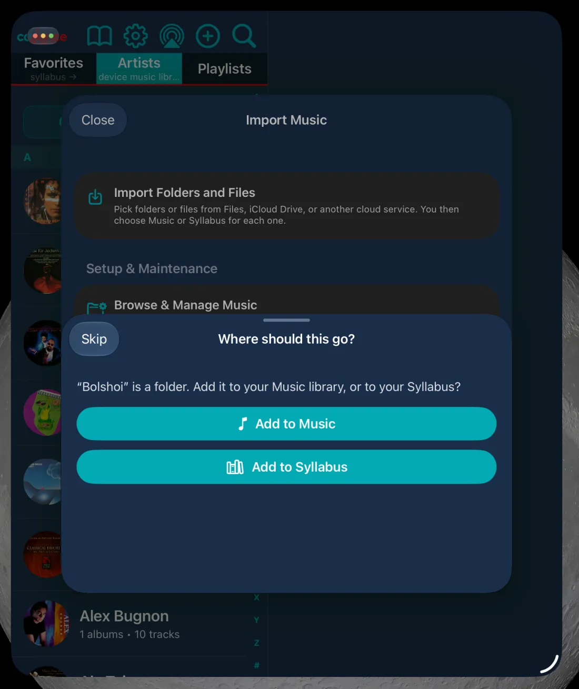
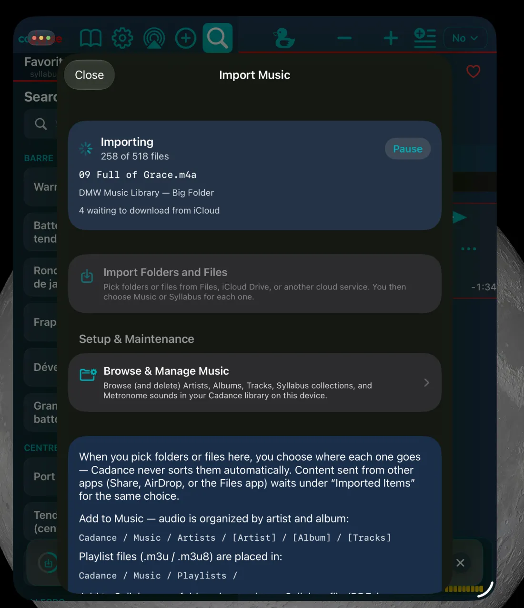
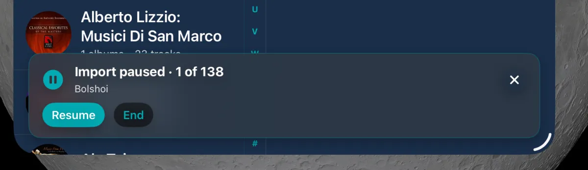
Easy to start, easy to learn
Straight to your music
One welcome screen and one music permission request. Cadance then opens where your music is: your albums or playlists, Cadance Resources, or Apple Music Search.
Visual Tour
A guided tour is built into the app, works offline, and starts with a five-tap Quick Start. Open it from Favorites.
iPhone, iPad, Mac, and Apple Watch
Cadance runs on iPhone and iPad with iOS 16 or later, adapts to both displays of iPhone Duo, and pairs with Apple Watch. On a Mac with Apple silicon, the iPad app installs from the Mac App Store (Designed for iPad), so you can plan classes on a big screen.
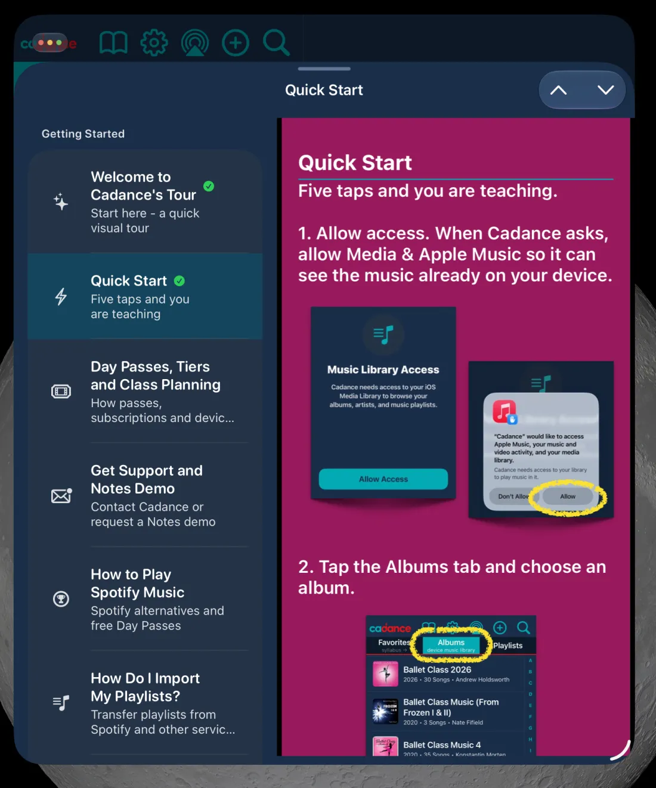
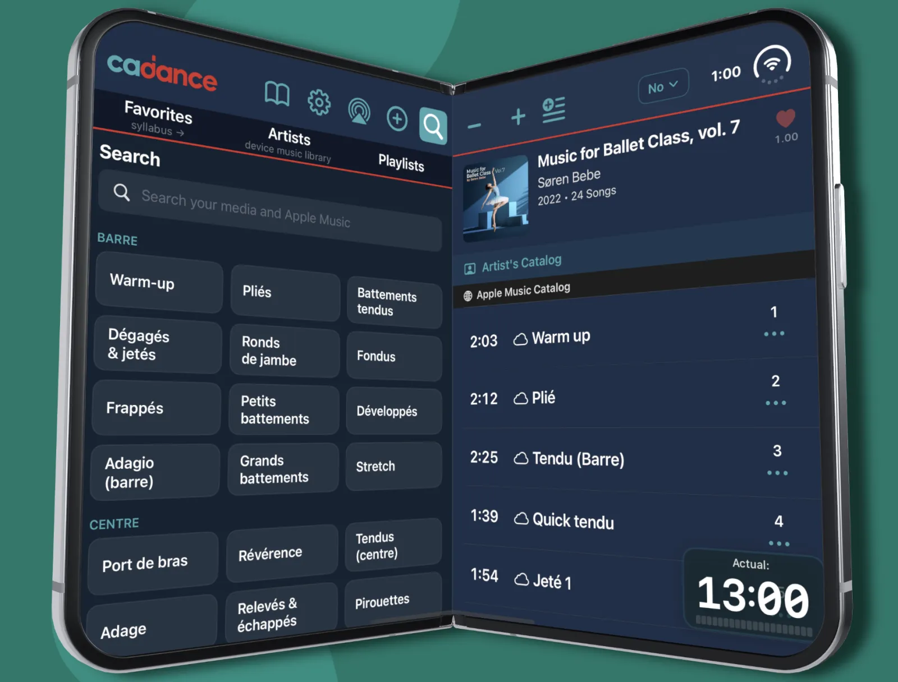
Music sources and Apple Music support (by plan)
Class Planning Mode
Browse, search, organize, write in Notebook, and hear 15-second previews. It is planning access, not a playback tier.
Spark
The BarreNotes-equivalent playback tier for music stored on your device and imported files, with countdown to start and Apple Watch control.
Artist
Adds Apple Music tracks, streamed or downloaded, Focus Player, docked notes, and Syllabus playback.
Without an Apple Music subscription, Apple Music tracks play Apple’s 30-second preview.